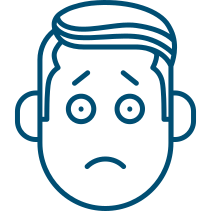
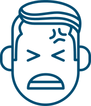
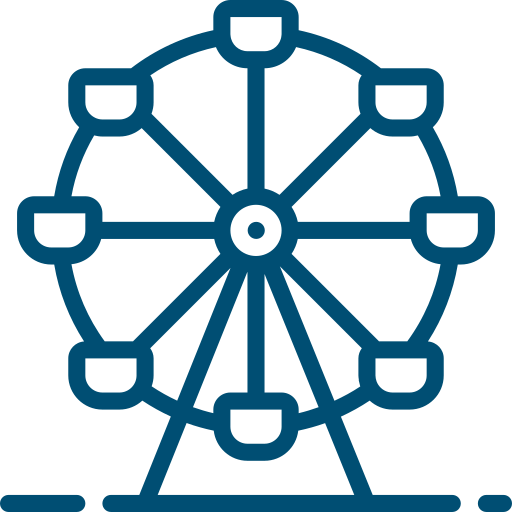
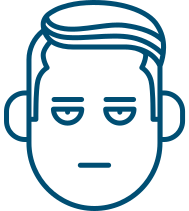

Настроение или болезнь
Жителей современных городов окружает множество факторов, провоцирующих стрессы. Проблемы, усталость, упадок сил – эти жалобы постоянно звучат вокруг. Так, все больше людей замечают в своем более или менее близком окружении человека, у которого долгое время "что-то не то с настроением". Мы называем это "депрессия", часто не задумываясь, что это не просто определение состояния, а конкретный и довольно серьезный диагноз.
Что такое депрессия у близкого человека – настоящая болезнь или его манипуляция своим плохим настроением?
Ответ одновременно прост и сложен: это настоящая болезнь, которую надо лечить у специалиста. В основе этой болезни лежит нарушение биохимических реакций, а именно дефицит химических веществ (нейротрансмиттеров), которые необходимы для правильного функционирования нашей нервной системы.
Как помочь? И нужно ли вообще помогать
(вдруг человек только хочет обратить на себя внимание)?

В основе этой болезни лежит нарушение биохимических реакций, а именно дефицит химических веществ (нейротрансмиттеров), которые необходимы для правильного функционирования нашей нервной системы.
Различают такие типы проявления депрессии:
Эмоциональные проявления депрессии
-
тревога, чувство внутреннего напряжения, ожидание беды
-

чувство вины, частые самообвинения
-
недовольство собой, снижение уверенности в себе, снижение самооценки
-
тоска, страдание, угнетенное, подавленное настроение, отчаяние
-

раздражительность
-

снижение интереса к окружающему, снижение или утрата способности переживать
удовольствие от ранее приятных занятий
-

утрата способности переживать какие-либо чувства (в случаях глубоких депрессий)
Классификация депрессий3
тревога, чувство внутреннего напряжения, ожидание беды
чувство вины, частые самообвинения
недовольство собой, снижение уверенности в себе, снижение самооценки
тоска, страдание, угнетенное, подавленное настроение, отчаяние
раздражительность
снижение интереса к окружающему, снижение или утрата способности переживать
удовольствие от ранее приятных занятий
утрата способности переживать какие-либо чувства (в случаях глубоких депрессий)
Российские психиатры выделяют несколько подтипов депрессий в зависимости от того, какой синдром является ведущим в картине заболевания. Так, существуют такие виды депрессий:
-
Апатическая депрессия
У человека в апатической депрессии полностью отсутсвуют желания и стремления. Снижение уровня побуждений приводит к тому, что человек перестает чем-либо интересоваться, становится полностью безынициативным3
-
Сенесто-ипохондрическая депрессия
В структуре этой депрессии присутствуют не только депрессивные симптомы, но и жалобы на неприятные ощущения в различных участках тела. В таком состоянии человека очень беспокоит свое соматическое (телесное) заболевание, у него появляются навязчивые мысли по поводу физического здоровья. Такие симптомы как душевная боль и тоска отходят на второй план13
-
Адинамическая депрессия
У людей, страдающих данным вариантом депрессии, часто развивается упадок сил, который сопровождается мышечной слабостью. И от человека можно услышать: «Ничего не хочу делать, устал». Двигательная активность может уменьшиться или совсем прекратиться. Для этого вида депрессии характерны слабость, бессилие, физическая заторможенность. Пациенты жалуются на «отсутствие сил», «умственное бессилие». Не редки у пациентов мысли о собственной неполноценности и жалость к себе, при этом самообвинение не характерно33
-
Тревожная депрессия
Проявляется двигательным возбуждением на фоне повышенной тревоги. Люди, страдающие депрессией такого вида, возбуждены, быстро и много говорят, мышление ускоренное и сбивчивое, тревога ощущается на физическом уровне. Идеаторные расстройства проявляются наплывом и путаницей мыслей, быстрой и непоследовательной речью. Также возникают суицидальные мысли и мысли самообвинения. Данный вариант депрессии является самым распространенным43
-
Меланхолическая или тоскливая депрессия
Характеризуется постоянно подавленным настроением наряду с гнетущей тоской. Часто встречается у людей среднего возраста и совсем не характерна для молодежи. Этот вариант депрессии переживается как сильная душевная боль («витальная тоска»), сопровождающаяся болезненными ощущениями в области сердца. Стремление к какой-то деятельности отсутствует, большую часть времени больные проводят в постели. Все происходящее видится ими в сером цвете, в памяти всегда всплывают старые обиды и ошибки прошлого. В крайне тяжелых случаях возникают суицидальные мысли и поступки3.3
-
Депрессия с бредом и галлюцинациями
В структуре этой депрессии на первый план выступают бредовые идеи и/или галлюцинации. Бред, как правило, сводится к идеям самообвинения и самоуничижения1. Пациент с этим вариантом депрессии испытывает бредовые идеи виновности, осуждения, может возникнуть бред преследования и отравления. Очень часто этот вид депрессии может сопровождаться у больного убежденностью, что не только он, но и все его близкие ощущают воздействие потусторонних сил и слышат «голоса».3
Источники
- Подкорытов В.С., Чайка Ю.Ю. Депрессии. Современная терапия. – Харьков, «Торнадо», 2003. – с. 35-37
- Внутренние болезни по Тинсли Р. Харрисону. Москва: Практика. − 2002. – т 2. − раздел 5. − С. 3024-3027..
Материал подготовил
врач-психиатр, к.м.н., доцент кафедры психиатрии и психосоматики
Первого МГМУ им. Сеченова Читлова В.В.
Описанный клинический случай является собирательным образом на основе клинического опыта из реальной практики
врача-психиатра, к.м.н., доцента кафедры психиатрии и психосоматики Первого МГМУ им.Сеченова Читловой В.В.
Помощь близко!
- - -
- Белгород
- Волгоград
- Воронеж
- Екатеринбург
- Железноводск
- Ижевск
- Иркутск
- Казань
- Калуга
- Краснодар
- Красноярск
- Липецк
- Набережные Челны
- Нижний Новгород
- Новороссийск
- Новосибирск
- Управление делами Президента РФ Федеральное Государственное бюджетное учреждение Объединенная Больница с Поликлиникой
- Медицинский центр «Атлас»
- Медицинский центр
- КДЦ «МЕДСИ»
- МК Семейный доктор
- Управление делами Президента РФ Федеральное Государственное бюджетное учреждение Объединенная Больница с Поликлиникой
- Медицинский центр «Атлас»
- Медицинский центр
- КДЦ «МЕДСИ»
- МК Семейный доктор
- Управление делами Президента РФ Федеральное Государственное бюджетное учреждение Объединенная Больница с Поликлиникой
- Медицинский центр «Атлас»
- Медицинский центр
- КДЦ «МЕДСИ»
- МК Семейный доктор
Управление делами Президента РФ Федеральное Государственное бюджетное учреждение Объединенная Больница с Поликлиникой
Москва, Мичуринский проспект д. 6
Дополнительная информация: Для записи на прием к врачу позвоните, пожалуйста, по указанному телефону. Обязательно уточните, работает ли клиника по ОМС, ДМС полисам или организован платный прием.
Назад к списку статей